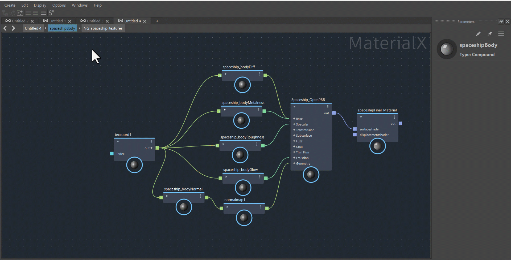
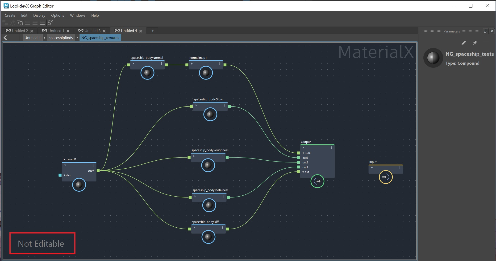

MaterialX Publishing refers to the process of exporting, organizing, and distributing materials and shaders. With Publishing, Lookdev artists can create libraries of predefined shaders for reuse, which can be easily shared with other artists.
To publish a graph as a Compound, select the nodes to be included in the Compound and right-click on an empty section of the graph, choose "Create Compound". By default the Compound will be published to your user directory: (C:\Users\your user name\Autodesk\LookdevX\Compounds\user)

You can set a preference for where compounds get saved in the LookdevX preferences dialog. To access the LookdevX preferences, open the Options menu in LookdevX and choose LookdevX Preferences. This opens the Maya Preferences window to the new LookdevX section.
There are two preferences for publishing Compounds:
User Library: Sets the directory path to where published Compounds are saved when publishing from LookdevX. This directory also serves as a source when importing compounds with the Tab menu.
Global Libraries: Sets the directory path(s) to external libraries from which Compounds are loaded. Multiple paths can be appended consecutively to load more than one global library. These paths can be managed using the environment variable LOOKDEVX_GLOBAL_LIBRARIES_PATH and setting it to the path of the library folder location(s). When the environment variable is used, the Global Libraries path option in the LookdevX preferences window becomes greyed out and inaccessible.
To reuse a published Compound, press Tab and go to the User category. If the User Library or Global Libraries preference has been edited, the Tab menu will contain a category reflecting the name of the folder(s) in the preferences, choose that category in the Tab menu and pick the Compound.
After importing a published Compound, you can view the node definition by right-clicking on the Compound and choosing "View Definition". This action will "dive into" the Compound and display the underlying graph that makes up the Compound. By default, the node definition is not editable as indicated by the "Not Editable" label in the bottom left corner of the LookdevX graph.
